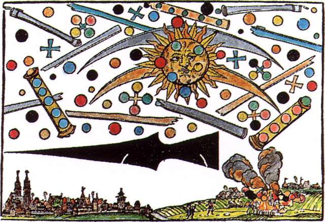
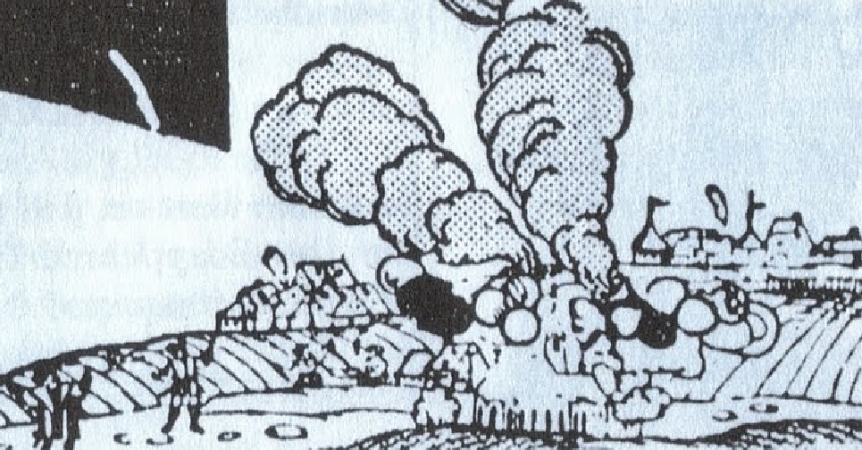
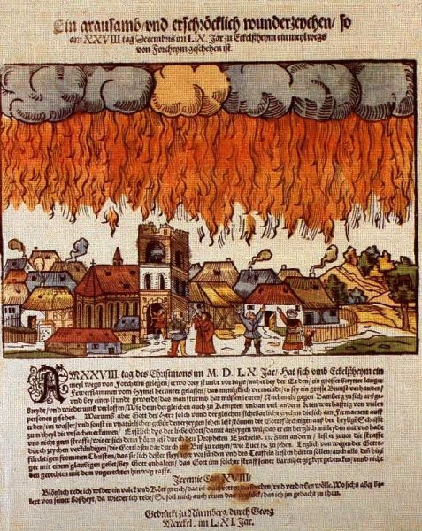
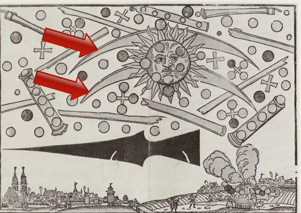
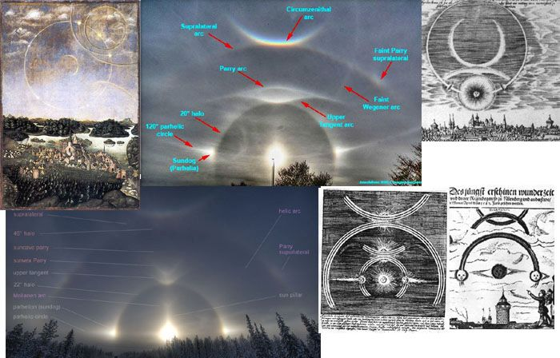
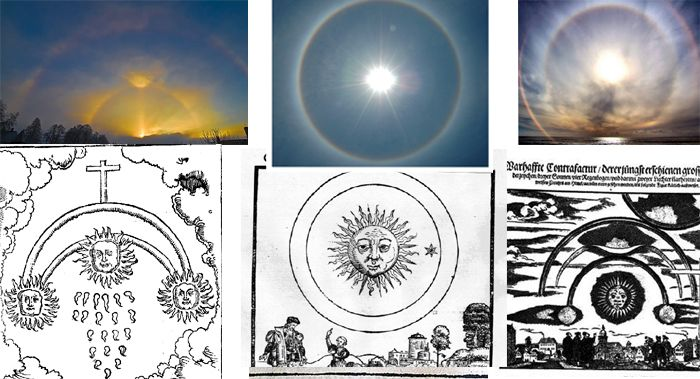
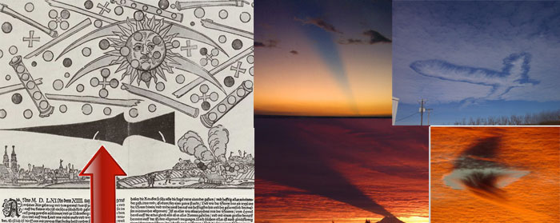

1561-04-14、ドイツ ニュルンベルク上空で数十の UFO が空中戦 → この謎を解く

要旨
1561年のドイツでの天空の怪事件を描いた版画に宇宙船群が描かれていた…という有名な事例。
この宇宙船群の正体を 幻日 で説明しているネット記事がある。確かに説得力があるが、幻日だけでは説明できない描写（黒い大きな矢のような物体や地上の煙）も存在する。
それらの描写を以下で合理的に説明する。これよってこの事件は完全に解決されたものと私は判断している。
更新
・（2020-03-23）些細な追加。 ・（2017-03-29）見出しの書式変更。 ・（2015.02.23 追加）円弧以外の UFO （黒い巨大宇宙船や黒や赤の球体、円筒など）の正体について追加。 ・（2014.07.19 追加）周囲の UFO 群をソース記事ではどう解釈しているか、を追加。（まだ途中） ・（2014.07.06 追加）これらの UFO の正体がほぼ判明した、という記事を追加。要旨
・1561年4月14日ドイツ ニュルンベルク上空。日の出の頃、上空で多数の奇妙な物体どうしの戦いが行われているのを街の人々が目撃した。この時の様子が木版画（下図）で残っている。 ・空は一面に奇妙な形の UFO の奇妙な UFO（総数は数十程度） で埋め尽くされ、戦いは1時間以上続いた。 ・シリンダー状の母船から回転楕円形の UFO が出現している。 ・図の右下の方に、2つの UFO が地上に墜落し、モクモクと上がる煙となって消えている様子が描かれている。（訳注：残骸は残らなかったようだ）  ・その後、とても巨大な槍のような形状の黒い物体が出現した（地上のすぐ上に描かれている）。 ・一時間ほどして、おしまいにこれらの奇妙な物体は太陽の中へ去っていった。ソース
http://www.hidden-truth.org/aliens/1561-spaceship-battle-above-nuremberg-germany-1566-sighting-of-large-group-of-alien-spaceships-over-switzerland-1697-two-glowing-wheels-over-hamburg-germany.htm http://www.educatinghumanity.com/2012/02/battle-over-nuremberg-germany-1561.html (2012.2.4)
（以下、2014.07.06 追加分） ・下の動画を見れば一目瞭然だが、動画は消える可能性もあるのでソース記事の写真や図を下に引用する。 ・細々とした説明は不要だと思うのでざっとソース記事の主張の要点だけ。 ・チェックの結果、この木版画は捏造ではなく、作成された年代も作成者も問題なし。 ・当時、これらの木版画は今で言う新聞のような役目を果たしていた。オーロラが発生して大騒ぎになった事件は下のような空が燃えている絵と文章で表現されている。  ・この UFO 群の正体は幻日。その一番の根拠が下の図。赤の矢印で示した円弧に注目。   
（以下、2014.07.19 追加分） ・木版画に描かれた太陽に交差する 2本の円弧の正体は上の通りだとして、他の図形はどのように説明するかというと…。ソース記事ではざっと次のように説明している。 ・シリンダ状の物体、ボール、十字型の物体 → 太陽の周囲を取り巻く縦になった線状の幻日や球状の幻日（若干、苦しい説明…w） ・水平線の上に出現した黒い宇宙船のような物体 → 下の写真（中央下の黒い直線的な影など）のような状況が宇宙船のように見えた。 ・木版画の右下の地上に墜落して燃えている物体 → 下の写真（中央上のヤツなど）のような状況が燃えている物体に見えた。 解説動画
ソース
http://ancientaliensdebunked.com/nuremburg-ufo-battle-debunked/コメント
・円弧部分の説明は説得力がある。円弧以外の UFO （黒い巨大宇宙船や黒や赤の球体、円筒、地上に墜落した物体からの煙など）の正体は上のソース記事の説明では若干、苦しい。 ・そのため上の説明では納得できないと否定して、宗教的な紛争をモチーフとして絵画的に表現したものだと主張する Blog 記事（下）もある。その説を簡単に紹介すると、UFO 群の交戦は宗教的な紛争、地上に墜落した煙は、紛争による焚書の煙だ…といった類の解釈。I saw the "debunked" feature when I was writing up my piece, Gilles. And I discarded the Menzelian explanation of weird atmospherics. It's not a better explanation. Ref ： http://ufocon.blogspot.jp/2014/06/those-15611566-woodcuttings-are.html・だが上の「宗教的な紛争」説は根拠が貧弱すぎて、幻日説より説得力がない（と私は思う）。 ・円弧以外の UFO （黒い巨大宇宙船や黒や赤の球体、円筒、地表に墜落した物体など）の正体は別の解釈が可能だと思う。それは… (2014.07.19)
--- （以下、2015.02.23 追加分）--- ・気がついたら半年以上、この記事を放置したまま。忘れていたわけではないが、個人的には解決したと見なしている謎を、いまさらダラダラと文章を連ねて説明するのがとても億劫で、ズルズルと先延ばししてしまった。 ・さて…。円弧部分は幻日説で納得できた。残った円弧以外の UFO （黒い巨大宇宙船や黒や赤の球体、円筒など）の正体について、私の解釈を以下で簡単に述べる。 ・まず、この謎を解くにはこの木版画がどういう状況下で作成されたのか…これを把握しておく必要がある。ソース記事によると次のような状況だった。 ・この木版画を作成した人物はこの事件の目撃者ではない。この事件を目撃した複数の人物の証言にもとづいて、証言者 A からは情景 a の証言、証言者 B からは情景 b の証言、…といった具合に寄せ集めて一枚の木版画を作成した。 ・証言者たちは 1時間ほどの間、この情景を目撃していた。 ・この木版画は当時の出版ビジネスであり、いわば当時のマスメディアの機能を幾分なりとも果たしていた。したがって現代のマスメディアと同様に、一般大衆の注目を集め、木版画を大量に売りさばいて儲けるために、より奇抜な証言ばかりを集め、あるいはより興味を持たれる証言へと取材時に誘導した筈。 ・ここで最も注目すべき点は、証言者たちが 1時間ほどの間、ゆっくりと変化する幻日の情景を見続けていたという事。その状況を想像してみればこの謎の正体が明らかとなる。 ・幻日を見続ける証言者の精神状態（催眠状態に誘導されるカモ…といった類の憶測）を問題にしているのではない。肉眼が問題となる。 ・眩しい太陽やそれを取り囲む幻日を 1時間ほど見続けたら、肉眼はどうなるか？ 目を逸らした時に、太陽や幻日が映り込んでいた網膜の箇所には何が見えるだろうか？ ・黒い巨大宇宙船や黒や赤の球体、円筒、地上に墜落した物体からの煙などの正体がソレ。 (2015-02-23)
（以下、2020-03-23 追加分）はじめに
・UFO どうしの交戦事例…という最近の記事の中で、この件が取り上げられていた。その記事の中でかなり具体的な目撃内容が引用されていたので、参考までに記録しておく。 ・なお、その記事の著者 Brent Swancer はこの UFO の正体の解明はほぼ不可能だと結論づけている。In later centuries it has come to be seen as perhaps some sort of atmospheric phenomena such as a sundog, flying swarms of insects, clouds, birds, a sensationalized tall tale, or even an actual mass battle between UFOs. It is likely we will never know, considering how lost to time the report is, but it is definitely curious.一部引用
At first there appeared in the middle of the sun two blood-red semi-circular arcs, just like the moon in its last quarter. And in the sun, above and below and on both sides, the color was blood, there stood a round ball of partly dull, partly black ferrous color. Likewise there stood on both sides and as a torus about the sun such blood-red ones and other balls in large number, about three in a line and four in a square, also some alone. In between these globes there were visible a few blood-red crosses, between which there were blood-red strips, becoming thicker to the rear and in the front malleable like the rods of reed-grass, which were intermingled, among them two big rods, one on the right, the other to the left, and within the small and big rods there were three, also four and more globes. These all started to fight among themselves, so that the globes, which were first in the sun, flew out to the ones standing on both sides, thereafter, the globes standing outside the sun, in the small and large rods, flew into the sun. Besides the globes flew back and forth among themselves and fought vehemently with each other for over an hour. And when the conflict in and again out of the sun was most intense, they became fatigued to such an extent that they all, as said above, fell from the sun down upon the earth ‘as if they all burned’ and they then wasted away on the earth with immense smoke. After all this there was something like a black spear, very long and thick, sighted; the shaft pointed to the east, the point pointed west. Whatever such signs mean, God alone knows.(2022-08-21 追記 begin)ref: Bizarre Cases of UFOs Dogfighting Other UFOs | Mysterious Universe - https://mysteriousuniverse.org/2020/03/bizarre-cases-of-ufos-dogfighting-other-ufos/DeepL 訳
最初、太陽の真ん中に、ちょうど最後の四分の一の月のような、血のように赤い半円の弧が二つ現れました。そして、太陽の上と下と両側には、色は血のようで、一部は鈍く、一部は黒い鉄色の丸い玉が立っていた。同様に、太陽を中心に両側とトーラスのように、このような血のように赤いものと他の球が多数、約3が一列に、4が四角に、またいくつかの単独で立っていた。これらの球の間には血のように赤い十字架がいくつか見え、その間に血のように赤い帯があり、後方は太く、前方は葦原の棒のようにしなやかで、それらが混在し、その中に二つの大きな棒があり、一つは右に、もう一つは左に、小さな棒と大きな棒には三つの球、さらに四つの球とそれ以上の球があった。 これらの球体は互いに争うようになり、先に太陽の中にあった球体は両側に立っている球体の方へ飛び出し、太陽の外の大小の棒の中に立っていた球体は太陽の中へ飛び込んでいった。その上、球体同士は行ったり来たりして、1時間以上も激しく争っている。そして、太陽への出入りが最も激しくなると、疲労が激しくなり、前述のように皆、太陽から地上に「焼けるように」落ち、その後、膨大な煙を上げて地上に衰弱していった。この後、非常に長く太い黒い槍のようなものが見え、軸は東を指し、先は西を指していました。このようなしるしが何を意味するかは、神のみぞ知るところである。 (2022-08-21 追記 end)コメント
・この引用箇所を読んだが、5年前 (2015-02-23) に下した結論は何も変わらない。むしろ補強材料になっていると思う。 (2020-03-23)履歴
(2012-02-04) 作成 (2014-07-06) 追加 (2014-07-19) 追加 (2015.02.23) 追加 (2017-03-29）見出しの書式変更 (2020-03-23）些細な追加
初出
1561年4月14日早朝、ドイツ ニュルンベルク上空で数十の UFO が空中戦（全体＋追加） (2020-03-23)